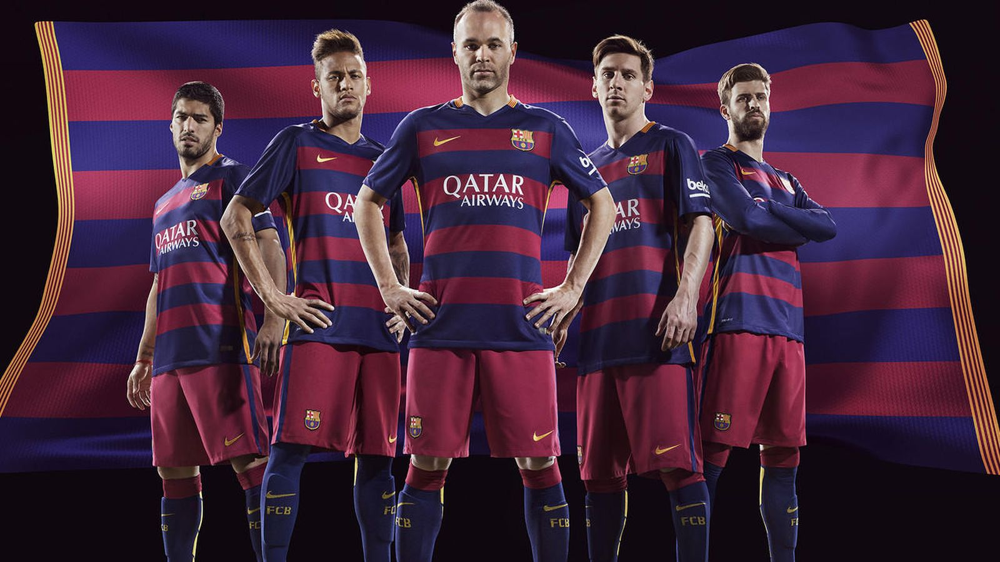
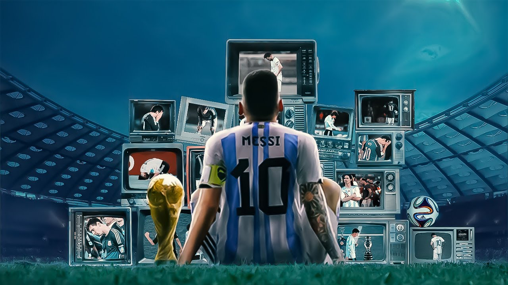

FÚTBOL

Este es mi deporte favorito, el cual practico desde que tenía aproximadamente 6 años.
Desde los 11 años he estado en diferentes equipos, en los cuales la mayoría de ellos hemos
salido campeón y actualmente soy el máximo goleador de la liga por 2 temporadas consecutivas.
Actualmente, formo parte de un nuevo equipo llamado "Galácticos" y por ahora vamos de primeros
en la tabla de posiciones.
FC BARCELONA

Este es mi equipo favorito desde siempre, fue gracias a los que ganaron el sextete
en 2009 que me hicieron apoyar a este gran club. Aprecio su estilo de juego, que
históricamente ha estado asociado con el juego de pases rápidos, habilidades técnicas
y posesión de balón. Y además la presencia de jugadores emblemáticos a lo largo de
los años es otra de las razones por las que amo a este equipo.
Messi

Messi es mi jugador favorito gracias a la extraordinaria habilidad técnica,
su control de balón, regate, precisión en los tiros y pases excepcionales.
Además los numerosos premios individuales, incluyendo los 8 Balones de
Oro y su contribución a los éxitos de su equipo, el Barcelona, en términos
de títulos nacionales e internacionales son cosas que hiceron que sea mi ídolo. Él
fue una de las razones por las que mi equipo favorito es el Barcelona.
Programación

La programación es una de las cosas que más me entretiene realizar ya que
saber programar es una habilidad valiosa en el mercado laboral actual.
Programar me puede abrir puertas a oportunidades profesionales
y además es una carrera en constante evolución. Este es mi tercer año programando.
La aplicación que más me ha gustado realizar fue una página de películas online,
proyecto que aún mi equipo de trabajo y yo seguimos trabajando actualmente.